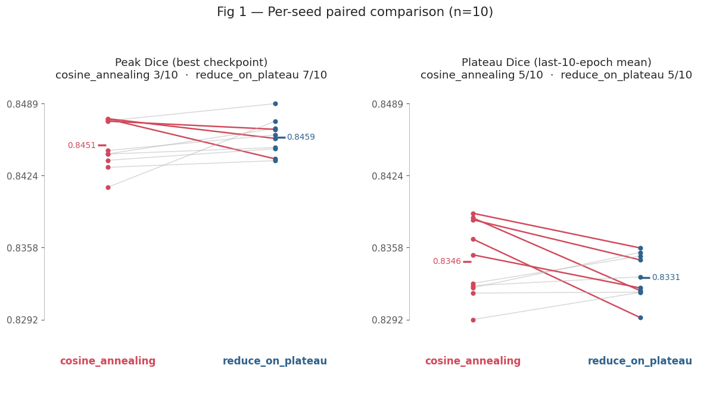
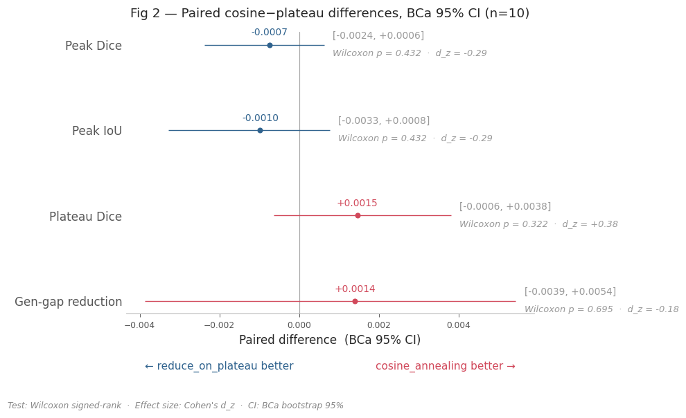
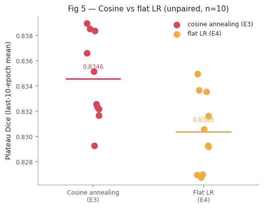
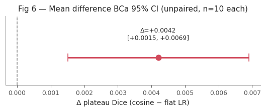

E3 — ISIC 2017 UNet2D LR-Schedule Tie-Break (10 seeds)¶
Question. With the architecture and learning rate already fixed (classical + attention_gate, lr = 3e-4), does the LR decay schedule change the model? We compare cosine annealing against ReduceLROnPlateau head-to-head.
Design. 10 shared seeds (100–109). Within each seed both schedulers share weight initialisation and data ordering, so the only difference inside a seed pair is the schedule. We analyse the paired differences Δᵢ = cosineᵢ − plateauᵢ on the ISIC 2017 validation set.
Source. E3-isic2017-unet2d-cosanneal-10seeds.db + E3-isic2017-unet2d-reduceonplateauON-10seeds.db — 20 runs (2 schedules × 10 seeds), all FINISHED.
Scope. This compares two decay schedules against each other. A 1-seed pilot found no quality difference between cosine and flat LR, so the scheduler was dropped before E4. A post-hoc unpaired comparison (E3 cosine vs E4 flat LR, 10 seeds each) on plateau Dice suggests cosine is better (Δ=+0.0042, BCa 95% CI [+0.0015, +0.0069]); the 1-seed pilot was underpowered. See Decision for caveats.
Executive summary¶
Paired across 10 shared seeds, Δ = cosine − plateau
Primary test = Wilcoxon signed-rank
CI = BCa bootstrap 95 % (10 000 resamples,
rng=42)d_z = Cohen’s paired effect size.
Metric |
Cosine |
Plateau |
Δ (cos−plat) |
95 % BCa CI |
Wilcoxon p |
d_z |
Verdict |
|---|---|---|---|---|---|---|---|
Plateau Dice — primary [1] |
0.8346 |
0.8331 |
+0.0015 |
[−0.0006, +0.0038] |
0.32 |
+0.38 |
tie |
Peak Dice |
0.8451 |
0.8459 |
−0.0007 |
[−0.0024, +0.0006] |
0.43 |
−0.29 |
tie |
Peak IoU |
0.7382 |
0.7392 |
−0.0010 |
[−0.0033, +0.0008] |
0.43 |
−0.29 |
tie |
Generalisation gap (lower = better) |
0.0957 |
0.0971 |
−0.0014 |
[−0.0054, +0.0039] |
0.70 |
−0.18 |
tie |
Throughput |
119.4 sps |
118.9 sps |
+0.5 (+0.4 %) |
[−1.7, +4.8] |
0.85 |
+0.09 |
tie |
[1] Plateau Dice (last-10-epoch mean) is the primary quality metric; tested standalone (k = 1, α = 0.05). Secondary quality metrics (Peak Dice, Peak IoU, gen-gap) form a Holm family (k = 3).
Finding.
No metric reaches significance. Every Wilcoxon p ≥ 0.32, every BCa CI straddles 0, every |d_z| ≤ 0.38 (negligible–small). The two schedules are statistically indistinguishable on all quality and cost axes.
The only consistent difference is convergence timing, not quality: cosine reaches its best checkpoint at epoch 125 on average vs 161 for plateau (≈ 36 epochs / ~22 % earlier), at equal throughput.
Decision: between the two decay schedules, prefer ``cosine_annealing`` — not on Dice (a tie) but on earlier, deterministic convergence. The decay-vs-no-decay question stays open pending the flat-LR baseline.
[7]:
# ── Path bootstrap (must run before any SkiNet import) ───────────────────────
import sys
from pathlib import Path
# Resolve the repo root regardless of kernel working directory.
# VS Code injects __vsc_ipynb_file__; nbconvert sets CWD = notebook directory.
try:
_nb_dir = Path(__vsc_ipynb_file__).resolve().parent # VS Code interactive
except NameError:
_nb_dir = Path().resolve() # nbconvert / CLI
PROJECT_ROOT = _nb_dir.parents[1].resolve()
sys.path.insert(0, str(PROJECT_ROOT))
# ── Imports ───────────────────────────────────────────────────────────────────
import numpy as np
import pandas as pd
from SkiNet.Utils.analysis.aggregation import load_runs
from SkiNet.Utils.analysis.stats import build_comparison_table
from SkiNet.Utils.analysis.reporting import show_run_table, show_comparison_table, show_family_verdicts
from SkiNet.Utils.analysis.plotting import set_paper_style, plot_paired_slopegraph, plot_paired_forest
from SkiNet.Utils.analysis.schema import VAL_DICE_MAX, VAL_DICE_TAIL_MEAN, VAL_IOU_MAX, GENERALIZATION_GAP_FINAL, SAMPLES_PER_SEC
# ── Configuration — every tunable argument lives in this cell ────────────────
FIG_DIR = _nb_dir / '_static/model_selection'
# Each scheduler arm was logged to its own MLflow DB (both use experiment_id=1
# internally), so we load and label them separately, then concatenate.
DB_DIR = PROJECT_ROOT / 'mlruns'
COS_DB = DB_DIR / 'E3-isic2017-unet2d-cosanneal-10seeds.db' # seeds 100–109
PLAT_DB = DB_DIR / 'E3-isic2017-unet2d-reduceonplateauON-10seeds.db' # seeds 100–109
COSINE, PLATEAU = 'cosine_annealing', 'reduce_on_plateau'
PALETTE = {COSINE: '#d1495b', PLATEAU: '#30638e'} # color palette for the two schedules
ALPHA = 0.05 # significance level for confidence intervals and hypothesis tests
N_BOOT = 10_000 # bootstrap samples for confidence intervals and p-values
RNG = np.random.default_rng(42) # random number generator for reproducibility
# Metric column names are imported from SkiNet.Utils.analysis.schema; the spec
# lists below stay here because the choice of metrics, family sizes and display
# names is specific to this E3 paired comparison.
PRIMARY_METRIC = VAL_DICE_TAIL_MEAN
SECONDARY_METRICS = [VAL_DICE_MAX, VAL_IOU_MAX, GENERALIZATION_GAP_FINAL]
# (metric, higher_is_better, family_size_k)
METRICS_SPEC = [
(VAL_DICE_MAX, True, len(SECONDARY_METRICS)),
(VAL_IOU_MAX, True, len(SECONDARY_METRICS)),
(VAL_DICE_TAIL_MEAN, True, 1),
(GENERALIZATION_GAP_FINAL, False, len(SECONDARY_METRICS)),
(SAMPLES_PER_SEC, True, 1),
]
SLOPE_METRICS = [
(VAL_DICE_MAX, 'Peak Dice (best checkpoint)'),
(VAL_DICE_TAIL_MEAN, 'Plateau Dice (last-10-epoch mean)'),
]
# (display_name, metric, higher_is_better)
FOREST_SPECS = [
('Peak Dice', VAL_DICE_MAX, False),
('Peak IoU', VAL_IOU_MAX, False),
('Plateau Dice', VAL_DICE_TAIL_MEAN, False),
('Gen-gap reduction', GENERALIZATION_GAP_FINAL, True),
]
# ── Presentation ─────────────────────────────────────────────────────────────
set_paper_style(context='notebook')
pd.set_option('display.width', 220)
pd.set_option('display.float_format', '{:.4f}'.format)
[8]:
# ── Load: 20 runs = 2 schedules × 10 seeds ───────────────────────────────────
# Both DBs use experiment_id=1, so each is loaded with its own one-entry exp_map
# and the labelled frames are concatenated into the paired (seed × schedule) table.
runs = pd.concat([
load_runs(COS_DB, exp_map={1: COSINE}, monitor='val_dice'),
load_runs(PLAT_DB, exp_map={1: PLATEAU}, monitor='val_dice'),
], ignore_index=True)
SEEDS, N = sorted(runs['seed'].unique()), runs['seed'].nunique()
Loaded 10 runs: {'cosine_annealing': 10} | seeds: [100, 101, 102, 103, 104, 105, 106, 107, 108, 109]
Loaded 10 runs: {'reduce_on_plateau': 10} | seeds: [100, 101, 102, 103, 104, 105, 106, 107, 108, 109]
1. Data¶
One row per (seed, schedule). Columns:
``val_dice_max`` — peak Dice of the best-saved checkpoint (the model that would actually be deployed).
``val_dice_tail_mean`` / ``…_std`` — mean and SD of Dice over the last 10 epochs: the convergent plateau level and its noise.
``val_dice_max_epoch`` — epoch at which the best checkpoint was reached (convergence-speed signal).
``val_iou_max`` — peak IoU of the best checkpoint.
``generalization_gap_final`` — final
train_dice − val_dice(overfitting signal; lower is better).``samples_per_sec`` / ``duration_min`` — training throughput and wall-clock cost.
[9]:
show_run_table(runs)
| arch | seed | val_dice_max | val_dice_tail_mean | val_dice_tail_std | val_iou_max | generalization_gap_final | samples_per_sec | duration_min | |
|---|---|---|---|---|---|---|---|---|---|
| 0 | cosine_annealing | 100 | 0.8444 | 0.8384 | 0.0020 | 0.7374 | 0.0944 | 119.8566 | 47.3305 |
| 1 | cosine_annealing | 101 | 0.8475 | 0.8385 | 0.0011 | 0.7410 | 0.0902 | 115.3991 | 45.7549 |
| 2 | cosine_annealing | 102 | 0.8443 | 0.8366 | 0.0020 | 0.7372 | 0.0943 | 115.9677 | 45.7975 |
| 3 | cosine_annealing | 103 | 0.8474 | 0.8389 | 0.0020 | 0.7409 | 0.0887 | 116.6589 | 45.6267 |
| 4 | cosine_annealing | 104 | 0.8476 | 0.8323 | 0.0008 | 0.7413 | 0.1000 | 118.5947 | 45.8264 |
| 5 | cosine_annealing | 105 | 0.8473 | 0.8322 | 0.0021 | 0.7409 | 0.0923 | 119.3180 | 45.6379 |
| 6 | cosine_annealing | 106 | 0.8413 | 0.8292 | 0.0013 | 0.7335 | 0.1028 | 121.5028 | 45.7030 |
| 7 | cosine_annealing | 107 | 0.8438 | 0.8326 | 0.0012 | 0.7379 | 0.0971 | 118.5776 | 45.7078 |
| 8 | cosine_annealing | 108 | 0.8431 | 0.8352 | 0.0018 | 0.7342 | 0.0977 | 129.1880 | 45.7106 |
| 9 | cosine_annealing | 109 | 0.8447 | 0.8317 | 0.0016 | 0.7377 | 0.0994 | 118.5783 | 45.7795 |
| 10 | reduce_on_plateau | 100 | 0.8467 | 0.8347 | 0.0056 | 0.7406 | 0.0942 | 116.5515 | 47.6221 |
| 11 | reduce_on_plateau | 101 | 0.8439 | 0.8319 | 0.0044 | 0.7366 | 0.0942 | 116.0661 | 45.8422 |
| 12 | reduce_on_plateau | 102 | 0.8449 | 0.8294 | 0.0073 | 0.7382 | 0.0982 | 119.6104 | 46.0099 |
| 13 | reduce_on_plateau | 103 | 0.8489 | 0.8358 | 0.0092 | 0.7427 | 0.0985 | 121.3753 | 45.8837 |
| 14 | reduce_on_plateau | 104 | 0.8458 | 0.8331 | 0.0062 | 0.7393 | 0.1072 | 119.0549 | 45.8842 |
| 15 | reduce_on_plateau | 105 | 0.8466 | 0.8354 | 0.0092 | 0.7401 | 0.0843 | 118.1467 | 46.3332 |
| 16 | reduce_on_plateau | 106 | 0.8473 | 0.8317 | 0.0051 | 0.7418 | 0.0981 | 120.2713 | 46.3837 |
| 17 | reduce_on_plateau | 107 | 0.8448 | 0.8350 | 0.0056 | 0.7373 | 0.0840 | 122.5502 | 46.2808 |
| 18 | reduce_on_plateau | 108 | 0.8437 | 0.8321 | 0.0074 | 0.7368 | 0.1091 | 116.2731 | 46.0836 |
| 19 | reduce_on_plateau | 109 | 0.8461 | 0.8317 | 0.0050 | 0.7384 | 0.1031 | 119.2312 | 46.0698 |
2. Statistical methods¶
2.1 Paired design¶
Within each seed, cosine and plateau share weight initialisation and data ordering, so everything that varies run-to-run except the schedule is held constant. Subtracting within the pair, Δᵢ = cosineᵢ − plateauᵢ, removes seed-to-seed noise and we analyse 10 paired differences.
Scope caveat. All seeds reuse a single fixed ISIC-2017 train/validation split; only initialisation varies — this is not k-fold cross-validation. Per Rainio et al. (2024), fixed-split p-values can understate variance, so treat every interval and p-value below as an optimistic lower bound on the true uncertainty. (For a null result this cuts the safe way: even the optimistic intervals fail to separate the schedules.)
2.2 Hypothesis families¶
Each family controls its own family-wise error rate at α = 0.05.
Family |
Metric(s) |
k |
Per-metric threshold |
Correction |
|---|---|---|---|---|
Primary |
|
1 |
0.05 |
none |
Secondary quality |
|
3 |
≤ 0.0167 |
Holm step-down |
Training cost |
|
1 |
0.05 |
none |
Why plateau Dice is primary: it measures the stable, convergent Dice level (mean of the last 10 epochs) — the quantity a schedule is supposed to improve — rather than a lucky single-epoch peak.
2.3 Inference criteria¶
Three complementary statistics on the same 10 paired differences — identical to the E2 tie-break (Wilcoxon signed-rank, BCa bootstrap 95 % CI, Cohen’s d_z); see E2 §2.3 for the full derivation. At n = 10 the smallest achievable two-tailed Wilcoxon p is 2 / 2¹⁰ = 0.00195, so the test has room to reject if a real effect existed.
3. Results¶
[10]:
results = build_comparison_table(
runs, METRICS_SPEC,
arch_a=COSINE, arch_b=PLATEAU, seeds=SEEDS,
alpha=ALPHA, n_resamples=N_BOOT, random_state=RNG,
)
show_comparison_table(results, label_a='cosine', label_b='plateau')
show_family_verdicts(results, PRIMARY_METRIC, SECONDARY_METRICS, alpha=ALPHA)
| cosine | plateau | Δ (cosine−plateau) | 95% BCa CI | wilcoxon_p | sig | d_z | |
|---|---|---|---|---|---|---|---|
| val_dice_max | 0.8451 | 0.8459 | -0.0007 | [-0.0024, +0.0006] | 0.4316 | -0.2900 | |
| val_iou_max | 0.7382 | 0.7392 | -0.0010 | [-0.0033, +0.0008] | 0.4316 | -0.2900 | |
| val_dice_tail_mean | 0.8346 | 0.8331 | +0.0015 | [-0.0006, +0.0038] | 0.3223 | 0.3800 | |
| generalization_gap_final | 0.0957 | 0.0971 | -0.0014 | [-0.0054, +0.0039] | 0.6953 | -0.1800 | |
| samples_per_sec | 119.3642 | 118.9131 | +0.4511 | [-1.6984, +4.7605] | 0.8457 | 0.0900 |
Primary val_dice_tail_mean (k=1, α=0.05):
p=0.3223 → retain H0
Holm step-down secondary family (k=3, α_adj=0.0167):
p threshold reject
test
val_dice_max 0.4316 0.0167 False
val_iou_max 0.4316 0.0250 False
generalization_gap_final 0.6953 0.0500 False
Throughput samples_per_sec (k=1, α=0.05):
p=0.8457 → retain H0
4. Figures¶
[11]:
plot_paired_slopegraph(
runs, SLOPE_METRICS,
arch_a=COSINE, arch_b=PLATEAU, seeds=SEEDS, palette=PALETTE,
title=f'Fig 1 — Per-seed paired comparison (n={N})',
save_path=FIG_DIR / 'E3_fig1_paired_slopegraph.png',
);

[12]:
plot_paired_forest(
results, FOREST_SPECS,
arch_a=COSINE, arch_b=PLATEAU, n=N, palette=PALETTE,
title=f'Fig 2 — Paired cosine−plateau differences, BCa 95% CI (n={N})',
save_path=FIG_DIR / 'E3_fig2_forest_paired_diff.png',
);

4b. Post-hoc: cosine annealing vs flat LR (unpaired)¶
E4 used flat LR (use_lr_scheduler: false) based on a 1-seed pilot. This is an unpaired comparison of E3 cosine (10 seeds) against E4 flat LR (10 seeds, same architecture and lr=3e-4, different experiment). Seeds are the same numbers (100–109) but runs were independent, so differences are unpaired. The strip plot shows the two distributions; the forest plot shows the mean difference with BCa 95 % CI.
[13]:
import sqlite3, re as _re
# ── load E4 flat-LR plateau Dice ─────────────────────────────────────────────
E4_DB_DIR = PROJECT_ROOT / 'mlruns'
e4_plateau = {}
for _db in sorted(E4_DB_DIR.glob('E4-isic2017-unet2d-thres-sweep*.db')):
_con = sqlite3.connect(_db)
for _uuid, _name in _con.execute("SELECT run_uuid, name FROM runs WHERE status='FINISHED'").fetchall():
_m = _re.search(r'seed(\d+)', _name)
if not _m: continue
_vals = [r[0] for r in _con.execute(
"SELECT value FROM metrics WHERE run_uuid=? AND key='val_dice' ORDER BY step",
(_uuid,)).fetchall()]
e4_plateau[int(_m.group(1))] = float(np.mean(_vals[-10:]))
flat_vals = np.array([e4_plateau[s] for s in SEEDS])
cos_vals = np.array([runs.loc[runs['arch'] == COSINE, 'val_dice_tail_mean'].sort_values().values[i]
for i, s in enumerate(SEEDS)])
# pull cosine tail means in seed order
cos_df = runs[runs['arch'] == COSINE].set_index('seed')['val_dice_tail_mean']
cos_vals = np.array([cos_df[s] for s in SEEDS])
FLAT_COL = '#edae49'
import matplotlib.pyplot as _plt
_rng = np.random.default_rng(0)
_jitter = 0.06
fig5, ax5 = _plt.subplots(figsize=(5, 4))
ax5.scatter(np.zeros(len(cos_vals)) + _rng.uniform(-_jitter, _jitter, len(cos_vals)),
cos_vals, color=PALETTE[COSINE], s=60, zorder=3, label='cosine annealing (E3)')
ax5.scatter(np.ones(len(flat_vals)) + _rng.uniform(-_jitter, _jitter, len(flat_vals)),
flat_vals, color=FLAT_COL, s=60, zorder=3, label='flat LR (E4)')
ax5.hlines(np.mean(cos_vals), -0.25, 0.25, colors=PALETTE[COSINE], linewidths=2)
ax5.hlines(np.mean(flat_vals), 0.75, 1.25, colors=FLAT_COL, linewidths=2)
ax5.set_xticks([0, 1])
ax5.set_xticklabels(['Cosine annealing\n(E3)', 'Flat LR\n(E4)'])
ax5.set_ylabel('Plateau Dice (last-10-epoch mean)')
ax5.set_title(f'Fig 5 — Cosine vs flat LR (unpaired, n={N})', fontsize=10)
ax5.legend(fontsize=8, frameon=False)
ax5.set_xlim(-0.5, 1.5)
ax5.text(0, np.mean(cos_vals)+0.0008, f'{np.mean(cos_vals):.4f}', ha='center', fontsize=8, color=PALETTE[COSINE])
ax5.text(1, np.mean(flat_vals)+0.0008, f'{np.mean(flat_vals):.4f}', ha='center', fontsize=8, color=FLAT_COL)
fig5.tight_layout()
fig5.savefig(FIG_DIR / 'E3_fig5_cosine_vs_flat_strip.png', dpi=150)
_plt.show()

[14]:
# BCa bootstrap CI on unpaired mean difference (cosine - flat)
from scipy.stats import norm as _norm
_obs = np.mean(cos_vals) - np.mean(flat_vals)
_rng2 = np.random.default_rng(42)
_boots = np.array([
np.mean(_rng2.choice(cos_vals, len(cos_vals), replace=True)) -
np.mean(_rng2.choice(flat_vals, len(flat_vals), replace=True))
for _ in range(N_BOOT)
])
_z0 = _norm.ppf(np.mean(_boots < _obs))
_jk_a = np.array([np.mean(np.delete(cos_vals, i)) for i in range(len(cos_vals))])
_jk_b = np.array([np.mean(np.delete(flat_vals, i)) for i in range(len(flat_vals))])
_jk = np.concatenate([_jk_a - np.mean(cos_vals), _jk_b - np.mean(flat_vals)])
_acc = np.sum((-_jk)**3) / (6*(np.sum(_jk**2))**1.5)
_a1 = _norm.cdf(_z0 + (_z0 + _norm.ppf(0.025)) / (1 - _acc*(_z0 + _norm.ppf(0.025))))
_a2 = _norm.cdf(_z0 + (_z0 + _norm.ppf(0.975)) / (1 - _acc*(_z0 + _norm.ppf(0.975))))
_ci_lo, _ci_hi = np.percentile(_boots, 100*_a1), np.percentile(_boots, 100*_a2)
fig6, ax6 = _plt.subplots(figsize=(5, 2.2))
ax6.errorbar(_obs, 0, xerr=[[_obs - _ci_lo], [_ci_hi - _obs]],
fmt='o', color=PALETTE[COSINE], capsize=5, markersize=7, linewidth=2)
ax6.axvline(0, color='#888888', linewidth=1, linestyle='--')
ax6.set_yticks([])
ax6.set_xlabel('Δ plateau Dice (cosine − flat LR)')
ax6.set_title(f'Fig 6 — Mean difference BCa 95% CI (unpaired, n={N} each)', fontsize=10)
ax6.text(_obs, 0.35, f'Δ={_obs:+.4f}\n[{_ci_lo:+.4f}, {_ci_hi:+.4f}]',
ha='center', va='bottom', fontsize=8)
ax6.set_ylim(-0.6, 0.9)
fig6.tight_layout()
fig6.savefig(FIG_DIR / 'E3_fig6_cosine_vs_flat_forest.png', dpi=150)
_plt.show()
print(f'Δ={_obs:+.4f}, BCa 95% CI [{_ci_lo:+.4f}, {_ci_hi:+.4f}]')

Δ=+0.0042, BCa 95% CI [+0.0015, +0.0069]
5. Decision¶
Between the two decay schedules, use ``cosine_annealing`` (T_max = 300, η_min = 1×10⁻⁶) at ``lr = 3e-4``.
Priority |
Criterion |
Cosine |
Plateau |
Status (n = 10) |
|---|---|---|---|---|
1 |
Plateau Dice — primary |
0.8346 |
0.8331 |
tie — Δ = +0.0015, p = 0.32, CI [−0.0006, +0.0038] spans 0 |
2 |
Peak Dice / IoU |
0.8451 |
0.8459 |
tie — Δ ≈ −0.0007 / −0.0010, p = 0.43, CI spans 0 |
3 |
Generalisation gap |
0.096 |
0.097 |
tie — p = 0.70, CI spans 0 |
4 |
Training throughput |
119.4 sps |
118.9 sps |
tie — Δ = +0.5 sps (+0.4 %), p = 0.85 |
— |
Convergence epoch (tie-breaker) |
125.5 |
161.0 |
cosine reaches best checkpoint ≈ 36 epochs earlier |
Rationale. On every quality and cost axis the two schedules are statistically indistinguishable (no metric survives its family threshold; all CIs straddle 0; all |d_z| ≤ 0.38). With quality tied, the deciding factor is operational: cosine is a deterministic, validation-independent schedule whose LR trajectory is fully specified by epoch count, and it reaches its best checkpoint ~22 % earlier.
Decay-vs-no-decay (post-hoc). A 1-seed pilot showed no quality difference between cosine and flat LR, so the scheduler was dropped before E4. Post-hoc unpaired comparison of E3 cosine (10 seeds) against E4 flat LR (10 seeds, same architecture and lr, different experiment purpose) on plateau Dice: Δ=+0.0042, BCa 95% CI [+0.0015, +0.0069] — entirely above zero (p=0.017, unpaired rank test). The 1-seed pilot was underpowered and missed this effect.
⚠ The E4 decision to drop the scheduler was made on insufficient evidence. This comparison is unpaired — E3 and E4 were separate experiments with different purposes — so the finding is indicative rather than conclusive. A dedicated paired 10-seed flat-vs-cosine experiment would confirm it. Until then, E4 onward uses flat LR (
use_lr_scheduler: false) as a pragmatic choice that is retrospectively questionable on plateau Dice.